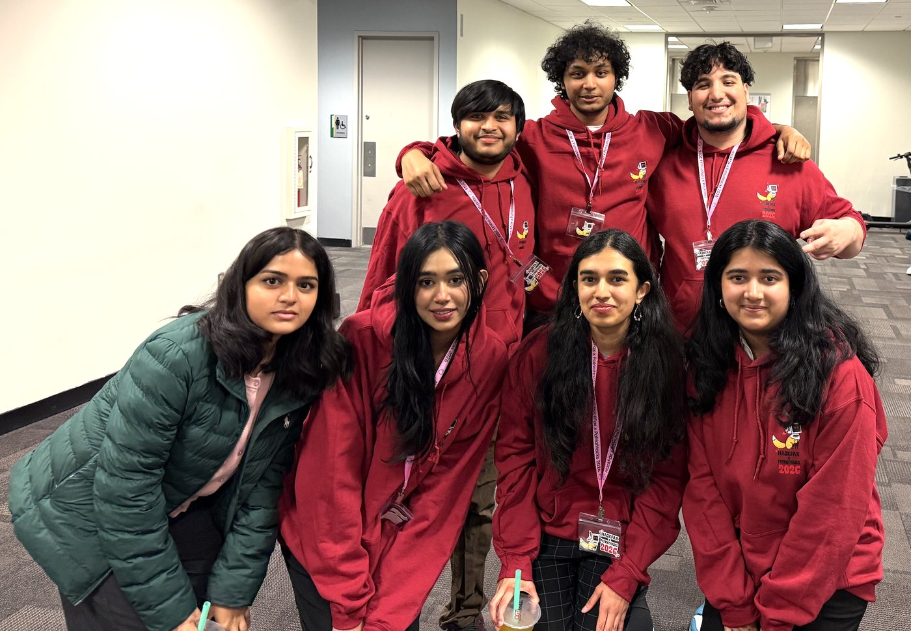

Live from HackFax, Saturday afternoon
It is 3pm on Saturday and the CTF has been live for four hours. Writing this from the corner of Horizon 1008 between resetting a challenge that started throwing 502s and answering my third "how do I view source on iPhone" question of the afternoon. Happy Valentine's Day.

What is happening right now
- Easy track is moving. Hidden in Plain Sight and Valentines Candy Hearts are getting solved in waves. First-time CTF players are figuring out that "view source" is a verb. That is the win I was hoping for.
- The hard ones are doing what hard ones do. The Architect's Love and Cupid Cipher have a handful of teams stuck on the same step. We knew going in that the medium-to-hard jump would be the cliff. We were right.
- One of the Vercel deployments cold-started badly twenty minutes ago. Caught it on the leaderboard before anyone Discord-pinged me. Fixed in two minutes. This is the part of "infrastructure as code" they do not teach in class.
Vibes
The Dewberry hall smells like Domino's and Red Bull. Someone is doing henna at a table by the entrance. The hackathon side is heads-down on Devpost submissions due tomorrow at 12:30. Our side is split between players hunting flags and us watching the leaderboard refresh every 30 seconds like it is a sports broadcast.
What I am proudest of, mid-event
The thing I was most worried about was first-time players bouncing. They are not bouncing. The Easy challenges are doing the job they were designed to do. Three different people have come up to me to ask "wait, that's all it was?" after solving their first one. That is the exact reaction I wanted.
Long writeup with what worked and what did not is coming once I sleep.
- Aalap, somewhere in Horizon